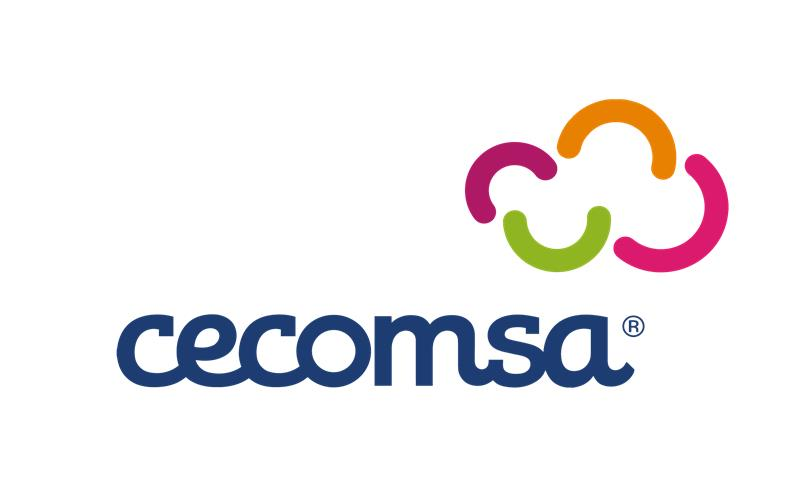

De responder preguntas, a hacer el trabajo contigo
Seis bloques cortos. Cada uno termina con algo que puedes aplicar mañana en tu trabajo.
Chat vs. agente y el vocabulario mínimo: empresa, modelo, asistente, interfaz, herramienta.
Alucinaciones en vivo y prompt injection: el CV tramposo y el chatbot que da de más.
Las 3 fuentes de contexto: lo que escribes, lo que le das a leer y lo que dejas en sus instrucciones.
Anatomía de un buen prompt, un antes y después, y por qué “hazlo mejor” no funciona.
El mapa para elegirla, de qué está hecho un asistente, rutinas, skills y cuándo la IA no es la herramienta.
La ventana de contexto tiene fondo: qué se olvida, qué se guarda y cómo trabajar con eso.
La IA es tan buena como el contexto que le das. Pide específico, corrige específico. Y verifica siempre.
Todo lo que necesitas para aplicar la charla desde mañana, en una sola página.
1. Llena tu mapa con una tarea.
2. Escribe un prompt con la anatomía.
3. Compara con lo que hacías antes.